THARA REAL ESTATES
الرئيسية الجديدة.
التنفيذ وأدلة الفحص.
فيلا متصلة من الخارج إلى الداخل، باب بمفصل حقيقي، وأحرف THARA مستقلة تتبع التمرير. المحتوى والصور والبيانات الأصلية محفوظة، والعمل معزول في فرع ومعاينة.
قبول المشهد الفعلي ما زال مفتوحًا. متصفح الفحص المتاح لا يدعم WebGL2. الصور أدناه تفصل بين لقطات المتصفح الفعلية والرندرات المعمارية من المجسم. لم تُقَس جودة WebGL أو سرعة الإطارات على جهاز فعلي، ولم تُنشر النسخة على الموقع الحي.
لقطات من الصفحة الفعلية
هذه لقطات متصفح. المشهد الافتتاحي يظهر البديل الثابت لغياب WebGL في بيئة الفحص. اضغط أي صورة لعرضها كاملة.

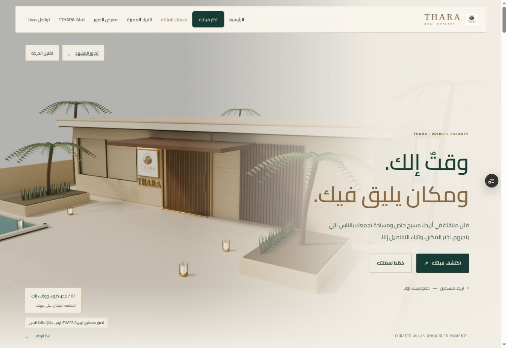

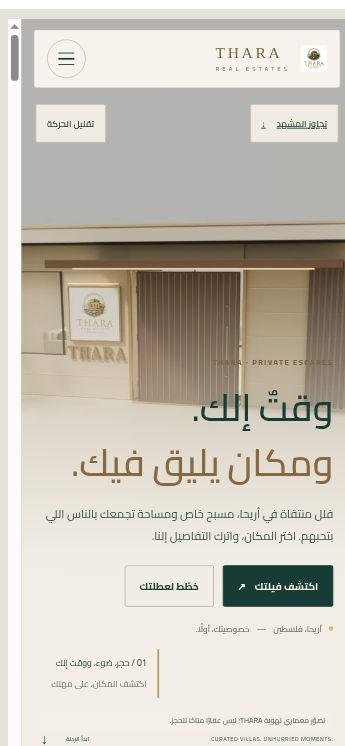

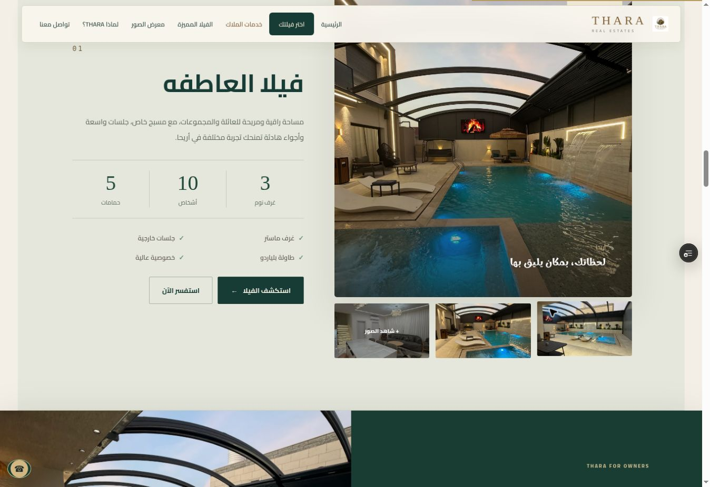

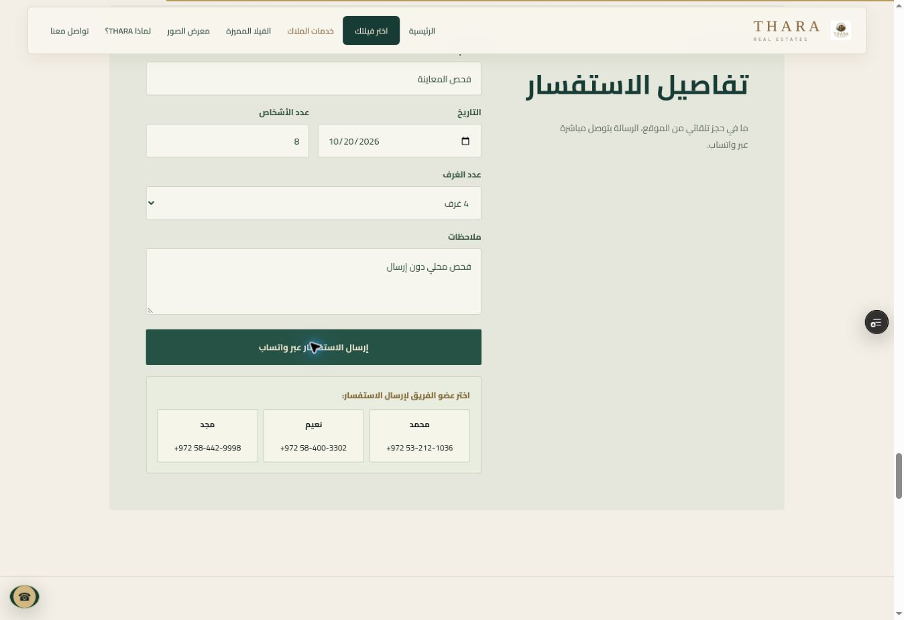

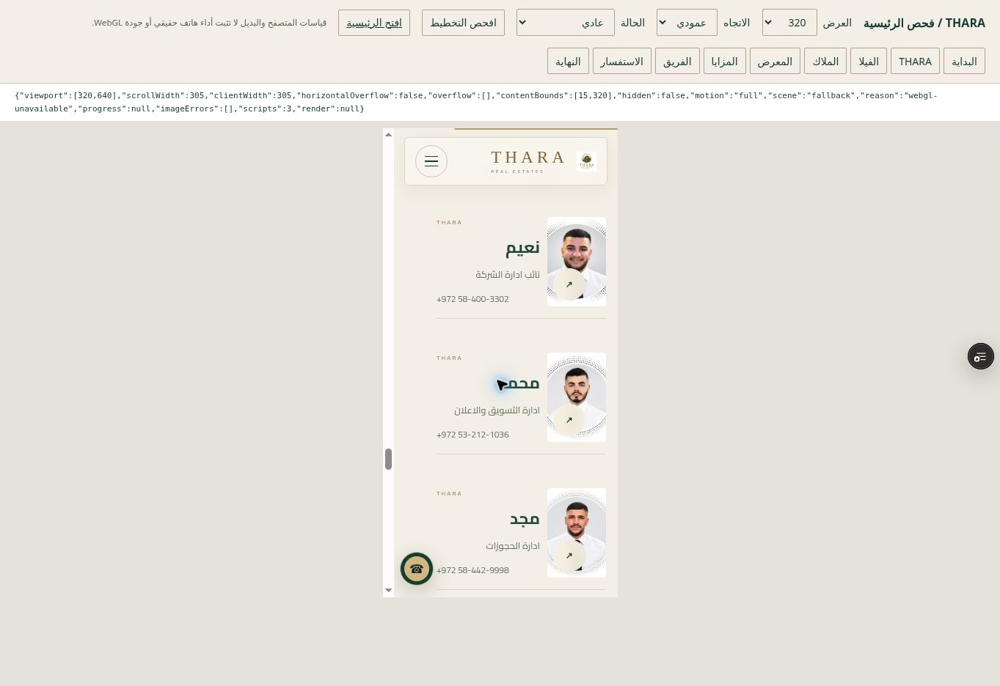
رحلة الفيلا من المجسم الفعلي
رندرات Blender Cycles على CPU من هندسة GLB ومسار اللقطات المحفوظ. تختلف الإضاءة الدقيقة عن Three.js؛ هذه الصور لا تثبت جودة المشهد في WebGL. الفيلا تصوّر لهوية العلامة وليست عقارًا معروضًا للحجز.

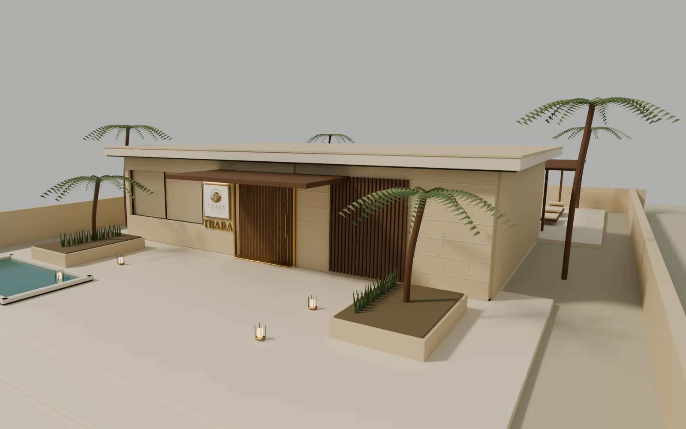

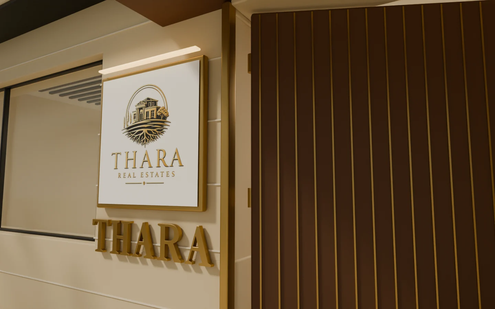

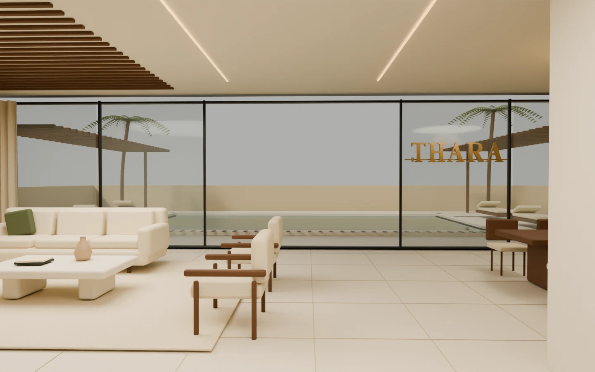

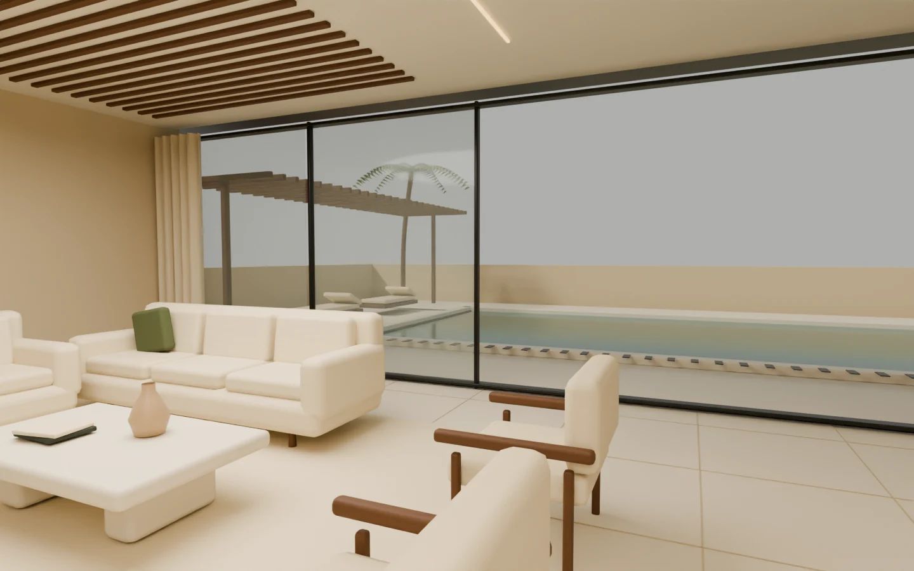

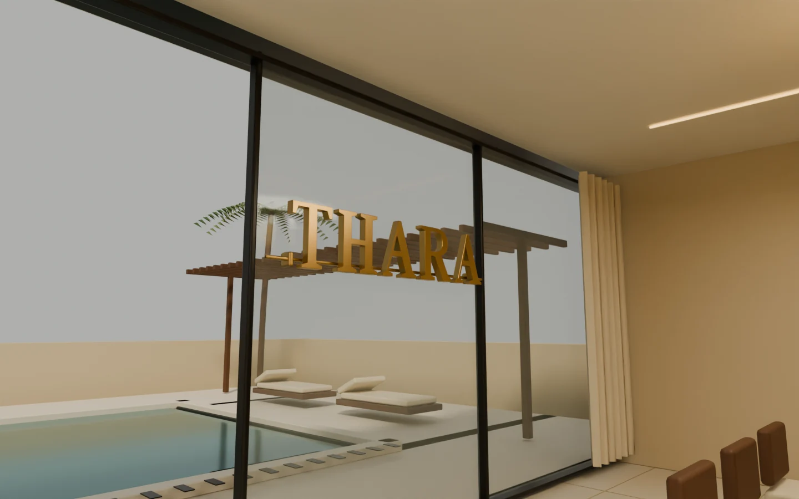

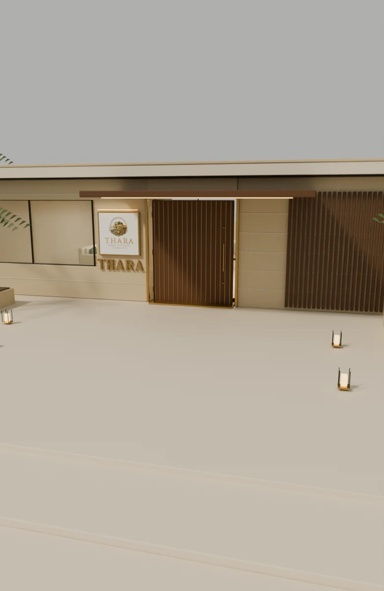

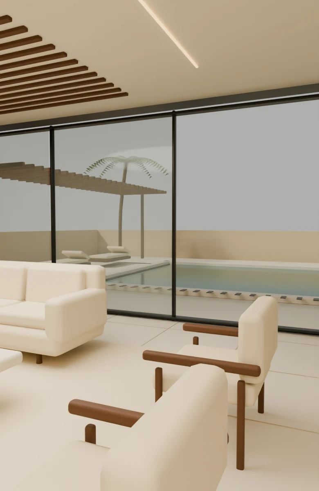
خمسة أحرف وخمسة مسارات
رندرات مستقلة توضح سماكة الحروف وحالتَي التجمع والتفكيك. حساب المسارات ومناطق الأمان مختبر؛ مظهرها فوق أقسام الصفحة في WebGL ما زال يحتاج قبولًا فعليًا.

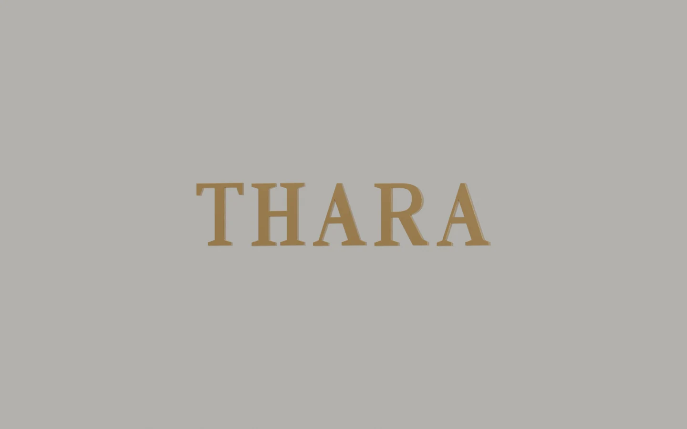

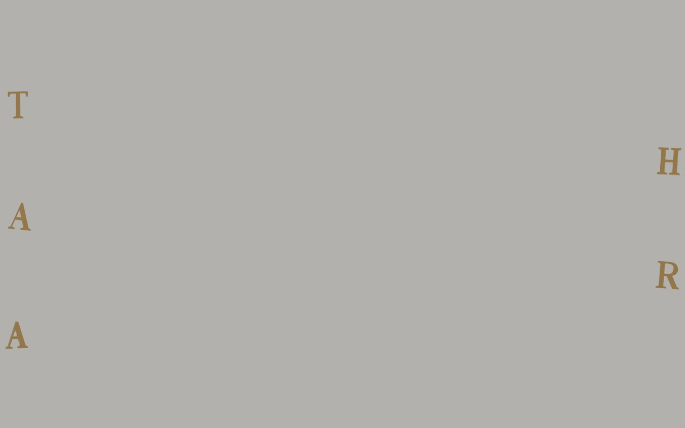


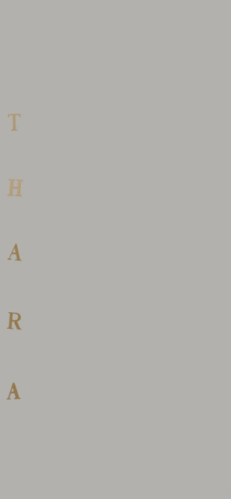